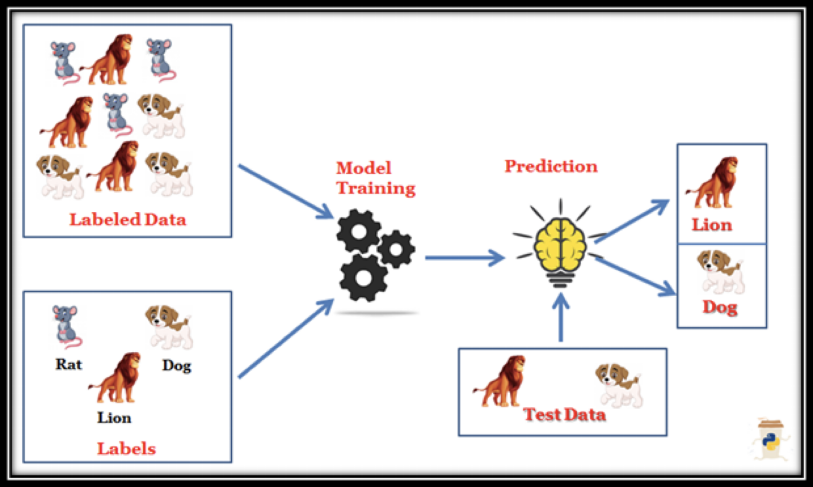

Lesson 6 - Supervised Learning
At the end of this lesson, you will be able to:
- Explain what is Supervised Learning and how it works.
- Identify the different Supervised Learning problems.
- List the Challenges of Supervised Learning.
What is Supervised Learning?
- The computer is provided with a labelled set of data that enables it to learn to do a human task.
- This is the least complex model, as it attempts to replicate human learning.
- The goal of the algorithm is to learn from “correct answers” in the training data and use the insights to make predictions when given new input data.

What are different Supervised Learning problems?
Two major types of Supervised Learning Problems:
Classification
- Classification maps input to output labels. Classification is a predictive modeling technique where a label is predicted for a given input.
- E.g., filtering emails to determine whether they are spam or not spam.
Regression
- Regression maps input to a continuous output. Regression learning allows us to predict continuous outcome variables based on the value of one or more predictor variables.
- E.g., Determine the relationship between the number of rash driving cases to the number of road accident cases by a driver.
Supervised Learning Applications
Some common applications include:
- Image- and object-recognition
- Predictive analytics
- Customer sentiment analysis
- Logistic regression
- Spam detection
Challenges in Supervised Learning
- Good examples need to be used to train the data.
- Computation time is very high for Supervised Learning.
- Unwanted data could reduce the accuracy.
- Pre-Processing of data is always a challenge.
- If the dataset is incorrect, you make your algorithm learn incorrectly which can bring losses.
In the next lesson, we will explore Unsupervised Learning.
Discussion prompt

Partner Activity
Discuss the following questions with your groups:
- If you are required to create a new Virtual assistant, what are the various functionalities that you want to see in it?
- What are the potential ethical issues arising from using virtual assistant, and how can you mitigate the risk?
- Write a paragraph based on the discussion (Maximum 100 words)
When you are finished, change the share settings on the notebook so that "anyone with the link can view" and post the link to the Unit 9 Lesson 6 - Virtual Assistants discussion prompt.